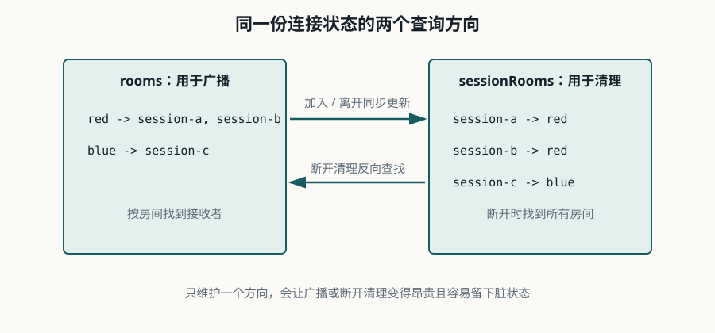

Lesson 0005 · G1
从回显扩展到多房间聊天
本课的唯一目标：设计并实现一个不会串房间消息、能够清理断开成员的多房间 WebSocket 服务。
本课有独立示例项目：examples/0005-multi-room-chat。
1. 先设计消息协议
不要先写一堆 if。先固定客户端命令和服务端事件，使浏览器、服务端和测试共享同一份契约。
| 方向 | 事件 | 必要字段 |
|---|---|---|
| 客户端 → 服务端 | join | room |
| 客户端 → 服务端 | leave | room |
| 客户端 → 服务端 | chat | room、text |
| 服务端 → 客户端 | joined、left | room、members |
| 服务端 → 客户端 | message | room、from、text |
| 服务端 → 客户端 | error | code、message |
示例项目限制房间名为 1~32 个字母、数字、下划线或短横线，消息正文限制为 1~256 个字符。限制不是完整安全方案，但能避免第一版协议没有边界。
2. 需要维护两个方向的索引
rooms: red -> [session-a, session-b] blue -> [session-c] sessionRooms: session-a -> [red] session-b -> [red] session-c -> [blue]

广播只需要从 rooms 找成员；连接断开时则需要从 sessionRooms 找出这个连接加入过的所有房间并清理。只维护房间到连接的单向索引，会让断开清理变成全表扫描，或者留下脏成员。
示例使用 ConcurrentHashMap 和并发 Set 保存内存状态。它解决集合结构的并发访问，不等于解决所有发送并发和业务一致性问题。
3. 源码导读：从命令到广播
先看配置类：它只把 /ws/chat 映射到 Handler。业务状态和协议分派都集中在RoomChatWebSocketHandler。
handleTextMessage
├─ 解析 ClientCommand
├─ join → rooms + sessionRooms → joined/member_joined
├─ leave → 移除两个索引 → left/member_left
└─ chat → 校验成员身份 → broadcast
afterConnectionClosed
└─ sessionRooms 找到所有房间 → 从 rooms 清理 → 通知剩余成员
源码里最重要的不是方法数量，而是两个不变量：
- 连接属于某个房间，当且仅当它同时出现在该房间的成员集合和自己的房间集合中。
- 广播只遍历目标房间的快照；清理完成后，空房间必须从
rooms删除。
测试证明了两件事：不同房间不会收到彼此消息，连接关闭会清理它加入过的所有房间。它还没有证明真实网络握手、慢客户端和多线程压力，这些属于后续验收。
4. 广播与发送边界
广播时先复制成员快照，再逐个发送。发送到同一个会话可能与另一个广播并发，因此示例用 synchronized(session) 保证单个会话的发送不会交错。生产系统通常还要加入有界发送队列、慢客户端策略和指标。
for (WebSocketSession member : snapshot(roomMembers)) {
if (member != excluded) {
send(member, event);
}
}
本课的广播包含发送者自身，方便客户端确认消息已经进入服务端。加入/离开事件则可以分别通知请求者和房间里的其他成员。
5. 运行和验证
cd examples/0005-multi-room-chat mvn test mvn spring-boot:run
打开两个浏览器标签页，分别连接 ws://localhost:8080/ws/chat，都加入 red。一个标签发送聊天消息，两个标签都应收到。再让第三个标签加入 blue，它不应收到 red 的消息。
关闭一个标签页，再让剩余成员发送或观察 member_left 事件，确认服务端最终移除了断开连接。
6. 失败案例
| 现象 | 根因方向 |
|---|---|
| 蓝房间收到红房间消息 | 广播使用了全局连接集合，或发送前没有按房间筛选。 |
| 断开用户仍被计入成员 | 只实现了 Close 帧路径，没有处理底层连接关闭回调。 |
| 同一连接的消息内容交错 | 多个线程同时写入同一个 WebSocket session，没有发送串行化或队列。 |
| 房间集合越来越多 | 空房间没有在最后一个成员离开后删除。 |
7. 练习：先回忆，再验证
运行独立示例后，回答下面 4 个问题：
-
为什么需要同时维护
rooms和sessionRooms？查看答案
rooms用于按房间广播，sessionRooms用于连接断开时快速找到它加入过的所有房间。两个方向分别服务于发送和清理。 -
为什么广播前要复制成员快照？
查看答案
发送过程中成员可能加入、离开或被清理。快照让本次广播遍历稳定，也避免在并发集合变化时把广播逻辑和状态修改纠缠在一起。
-
为什么并发 Map 不能自动保证消息发送安全？
查看答案
并发 Map 只保护集合结构的访问，不保护同一个 WebSocket session 的写入顺序。多个线程仍可能同时调用发送方法，因此需要串行化或有界发送队列。
-
这个示例为什么还不能直接称为生产级聊天系统？
查看答案
它只把状态保存在单机内存中，没有鉴权、持久化、离线补拉、幂等、限流、慢客户端治理或多实例消息路由，只适合作为 G1 的最小起点。
快速检查：连接断开时，最重要的清理对象是什么？